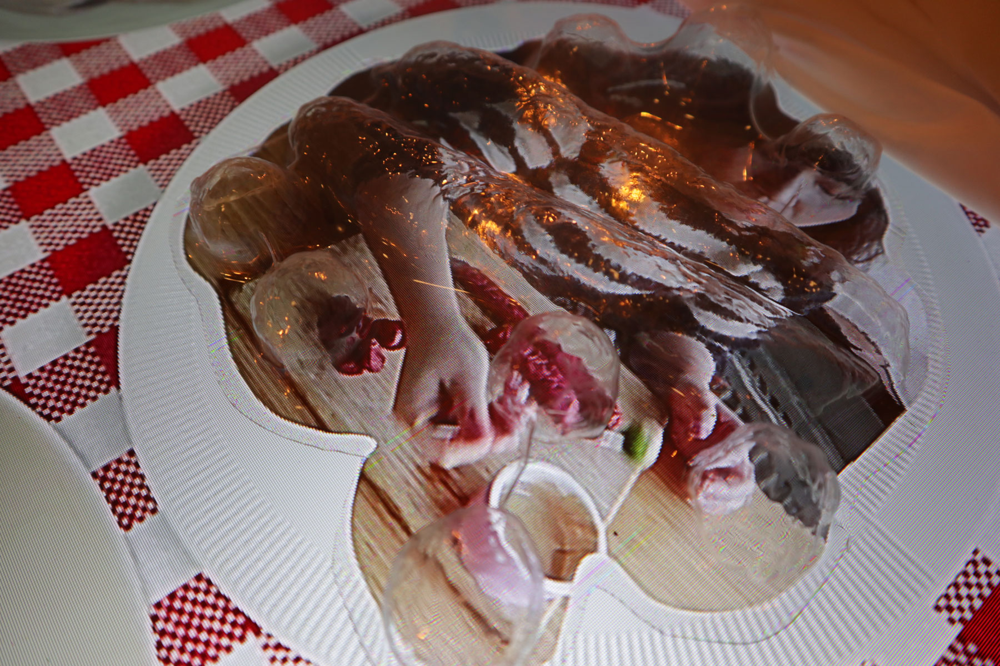
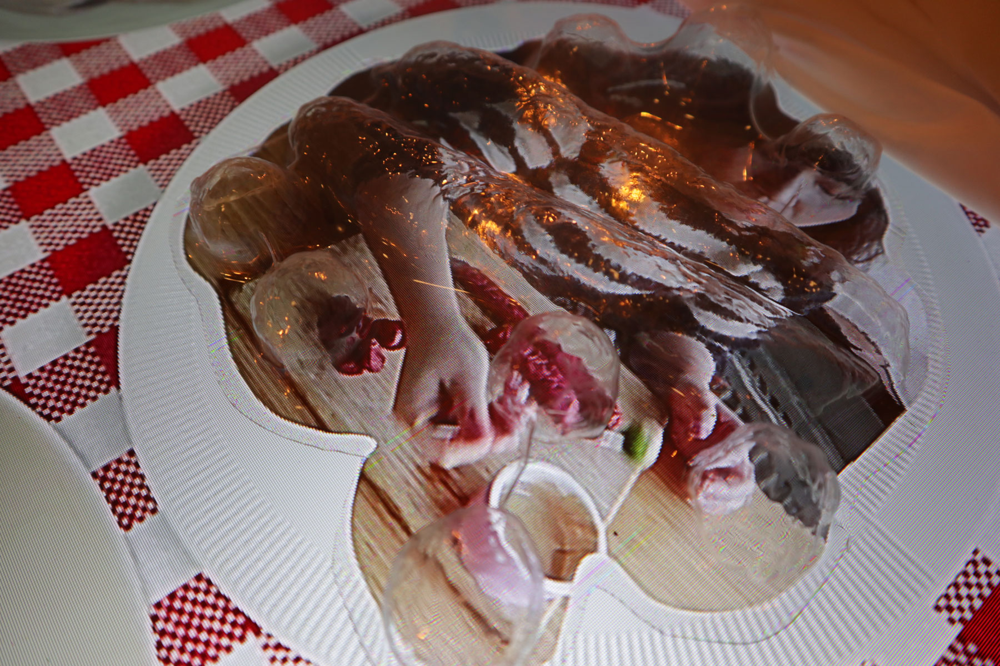

FatKat
Studying graphic design in a dutch art school, we learn the history of graphic design from the western point of view. It is a linear, progressive, evolutive and monocular narrative about modernism. When it comes to regions outside of Europe, the history of THEIR, defined-by-Europe and influenced-by-Europe graphic design, is always a solitary chapter in the textbook, is always behind, exotic, and out-of-the-system. How do we look at the non-european graphic design? Where and how do they exist, in the city centre of a north european country, one of the birthplaces of modernism?
Having this in mind, I started to document the graphic design going on in China town in the Hague, a self-alienated cultural compact of all outsiders — China, Indonesia, Korea, Thailand, Turkey, Surinam, Morocco, Colombia… This is a visual archive of the images, representing the local visual communication created by some of these minority groups. It contains visual design around/for food, beauty, leisure, display design and package design.
Coming from China and studying graphic design in a dutch art school, the way I look at China town graphic design is, inevitably, an euro-centric and orientalist gaze — It is an awkward encounter and a puzzling relationship of my origin and my academic knowledge. I look at their graphic design and evaluate its quality with the knowledge the school learnt me on typographical legibility based on english language and photographical strategies that please a cornered market. In this way of looking at it, it is, and only can be, amateur, literal, pictorial and naive. Sometimes it is also strategically nostalgic, in order to refer to their history; some of it glamorises the exoticism to express their authenticity.
What now?
I judged, I gazed. I am not innocent. But I embrace it, and I dare to do so. Meanwhile I am self aware and I would like to question, if there is an exit from an euro-centric art academia, and a better re-entry to the non-european, with a more inclusive view point on cultural and linguistic aspects. I also wonder, if we are able to unlearn. Knowledge can only be a mask, a prison, and an island, if we don't unseal its closure and repel the authority. By the same time of unlearning, we let the unknown and misjudged learn us.
髮嘉, a word, a sign, a complication. It is decoded, and now being encoded again. But instead of solving it from above, it’s time for it to unfold itself for us.
The Missing Book
This is what I want to question the reader, by my book design. The sentences that tell the story are crossed — is a story necessary? Space is constructed in text — how does time pass and what had happened in-between? Are you reading the blankness?
Instead of presenting the book for reader, I allow the public to go to the bookcase and dig for the “real” book among 16 empty books. I intend to let them questioned, also with the interaction and effort they pay.
The novel, in the style of stream of consciousness doesn’t narrate either a great story, or construct a deep thought. It only depicts and simulates the feelings that pass through the mind. I always like to read this kind of literature to get lost, and to forget my expectation from the reading. This time, I want people not only to read and get the things they “want” from reading, but also focus and think about the activity of reading itself.
Taoist Corporeal Map

 “煉度”(Lian-du) is a taoist meditation technique for the salvation of lost souls. It is divided into two kinds of practices of meditation. “內煉” is the individual meditation, while “外煉” means the ritual that is performed in public and on a collective basis. These two practices are combined to achieve the unity of both inner and outer space. The principle of “內煉” is to imagine the body as a universe and to assign different facilities to body parts and organs. While meditating, one tries to bring the lost soul through the body to reach the “jade clarity”. “外煉” materialise this process, and forms it into a performance in actual space.
These two practices are perfectly unified through the correspondence of the two spaces (an imagined vs. an actual one). Yet everyone who mediates has their own map of inner universe. While there are very specific names of each apparatus in the corporeal landmarks, no one’s travel would be the same. This made me into visualising the inner universe with my imagination, and into bringing the ineffable experience to our eyes and ears.
This work is chosen for a duo-exhibition took place at Space101 in Rotterdam. More info: https://www.facebook.com/events/864188610706502/
Am I the Butterfly
This is a immersive space where I created a singing machine: a flipping mirror that reflects the imagery from two projectors and throws it back and forth to the wall. In the video, I was singing I will Be Your Mirror and Sunday Morning by The Velvet Underground.
Group exhibition @The Grey Space in the Middle, The Hague
Truth Unfolds Here
I went to places in Den Haag with a lot of public access such as the city hall, the metro station in the city center, big supermarket and on the tram, to perform this act.
Your Final Table
Dinner is no longer dinner anymore,
not on the tables, in the plates, cooked and eaten.
It is a bunch of millions of pixels,
on the screens, posted, viewed and shared.
Eating shows, food-porn pics, cooking vids and chewing ASMR.
People consume no longer the food itself,
but the representation of it.
It is no longer the eating itself,
but the image of eating that satisfies people.
Here we hold the funeral of dinner,
sacrificing with food replica,
to mourn the loss of physical realness of dinning.
Jump Rope to Write Letters
Looking for alternative ways of "writing" and reconstructing the meaning of writing, I use body movement in a certain game to achieve it.
“An in-between place provides the common ground where conflicting polarities can again become twin phenomena.” Inspired by Aldo van Eyck’s point of view on architecture, I want to express the sentence in a spacious and dynamic typographical way.
I had lots of joy from the jumping rope game when I was a kid. I think this game is a great system showing two polarities being reconciled: you are in and out, and in again.
I shaped the letters by jumping rope in a route of the how you write the letters. In this way, I let the “in-out” polarities meet, and the “writing” itself re-judicated.
Amanclocmyl
AMANCLOCMYL IS A WORD.
OR IS IT?
AMANCLOCMYL is a graduactioin project of Yusuf Zucherro about cult and "langustic terror".
My design task is to make publication, leaflet and poster.
He Looks
I get embarrassed, overwhelmed, but also often times *secretly* fascinated by them. It felt like: I know all the stories going on here, but I would like to read them one by one, to confirm the “same old shit”. They keep reminding me that, even though we are witnessing a change in narrative in film/comic/entertainment industry, the male and colonial hegemony is still everywhere, has been mass produced and been surrounding us in an innocent, uncensored format.
While my collection is still growing, I decided to present some of them in a publication, along with four crucial texts on male gaze and colonial gaze.
Language Overlaps
Lonely Hearts Portal
chats data downloaded from Tinder and instagram; visual made with program CrazyTalk.
“Be here, I tell you everything I have said....”
TikTok Alone Together
However it is totally another ideology in the age of self media: Everyone shows off themselves and wants to be unique. Individualism is largely celebrated. But the fact that people follow the trends — especially on the mobile video App TikTok, where they like to dance to the music with the same movements, has a common ground with collective dancing.
By conjoining single clips of dance, I try to make the “collective dance” possible again, in a virtual and expansive space.
124 + 625 Roman Columns
The Greeks developed the classical orders of architecture, which are most easily distinguished by the form of the column. The Romans suited them to their tastes and architectural liking. In modern time, this architectural element promotes a rich, ideal and noble style. Carrying this connotation, roman columns are used in a lot of situations in China: from a permanent construction in a fancy real estate, to a temporary decoration in a wedding, and to a newly built house in countryside…
Because of a large amount of needs, Chinese producers have always been busy with roman columns. There are numerous different kinds of roman columns being sold on taobao.com — columns made of plasters, plastic, concrete, rubber and column’s moulds…
This work is an interactive archive of Chinese roman columns. I collected 124 roman columns in Beijing, by capturing them with my camera, and 625 roman columns’ images from taobao.com, by scraping the data from the web shops and integrating them into a self-growing system.
The installation consists the the film “124 Roman Columns”, the interactive website of 625 roman columns and the printed version of the 625 columns. The film has 3 chapters: ORDER, IDEALISM and VICTORY, which respectively show the columns, sculptures and triumphal scenes in the architectures in Beijing.
group exhibition contemporary Flavours @KABK
Royal Nail Salon
The first time went like: I hosted Royal Nail Salon at school for half a day. I provided the material and everything was free to use. The only rule is that you can only paint nails and choose colours for each other. It is neither a self-service nor a staff-client service. I want to explore the possibility where all kinds of interaction happen in a get-together spot.
The idea of Royal Nail Salon is to bring the”non-art”, the “mundane” and “service” to an art environment and context and to break the boundaries. And I want to build an “immediate” community to share the intimacy and queerness with people.
Royal Nail Salon has grown big and into different collaboration. Me and Yusuf invented our special service “Tarot and Nails”. We ask our customer to pick 10 cards by their 10 fingers. Yusuf read the cards and I painted the nails of the fingers according to my interpretation of the reading. Colour, glitter and pattern have become metaphorical and esoteric.
Royal Nail Salon / Tarot and Nails have (co-)hosted / participated in:
Royal Nail Salon
Rietveld Flea Market
ùìâ'ùìà ùìâùíæùìÇùëí ùìâùëú ùìÅùëíùìâ ùíæùìâ ùëîùëú
Pisswife #3 Launch Party
Cinema Underexposed Film Festival!
Roller Disco / Basement Beach Club X Note To Self After Party
CinemAsia presents : Live in between vol. 2: Trans-dialogue